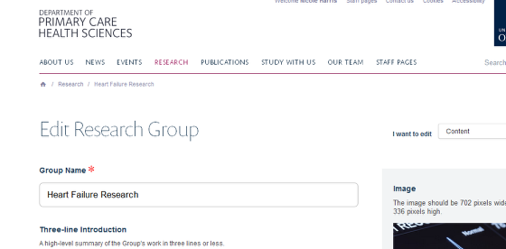
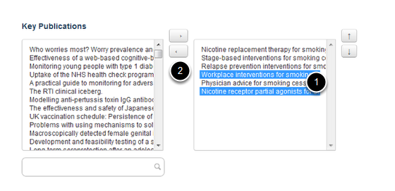

This shows you how to remove publications which have been added to a Research Group page. The publications will be moved back into the general pool of publications.
Go to the Research section of your website and find the Research Group page you would like to edit. Click on edit on the tool bar at the top of the page to bring up the editing interface:
Scroll down the page until you reach the Key Publications section at the bottom of the page. The box on the left hand side contains all publications entered into Symplectic by members of your department. The box on the right hand side contains publications appearing on your Research Group page.
To remove publications: 1. Highlight the titles in the right hand column. 2. Click on the bottom arrow to move the publications back into the list of available publications.
Save your changes (the Save button is at the bottom of the page).